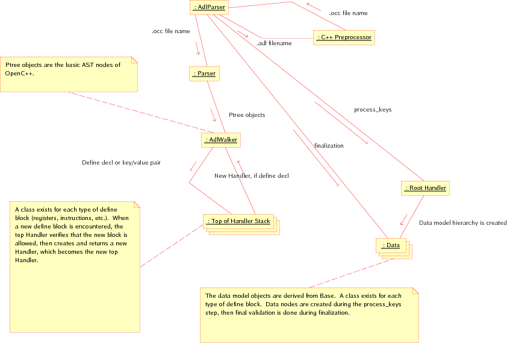
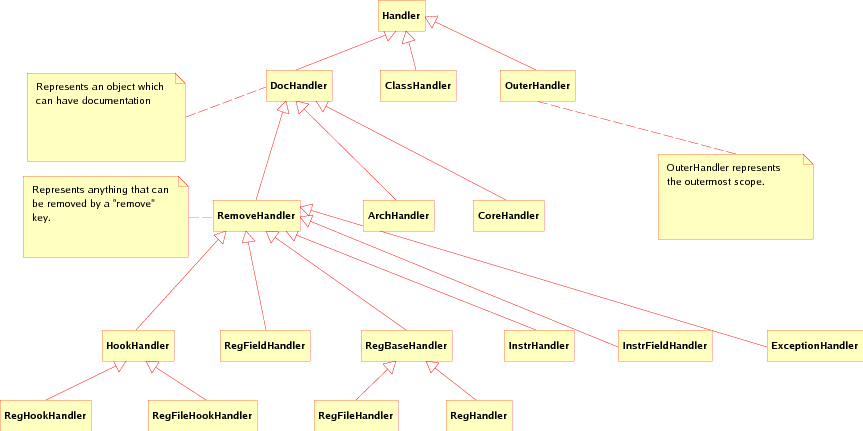

<?xml version="1.0" encoding="utf-8" ?>
<!DOCTYPE html PUBLIC "-//W3C//DTD XHTML 1.0 Transitional//EN" "http://www.w3.org/TR/xhtml1/DTD/xhtml1-transitional.dtd">
<html xmlns="http://www.w3.org/1999/xhtml" xml:lang="en" lang="en">
<head>
<meta http-equiv="Content-Type" content="text/html; charset=utf-8" />
<meta name="generator" content="prest release 0.3.40" />
<link rel="stylesheet" href="default-rst.css" type="text/css" />
</head>
<body>
<div class="document">
<div class="standard header">
  <link type="text/css" rel="stylesheet" href="/swo/css/fsl.css" />
  <script type="text/javascript" language="javascript" src="/swo/jscripts/FSLHeader.js"></script>
  <script language="JavaScript"> 
        WriteFSHeader(); 
  </script> 
</div></div>
<div class="footer">
<hr class="footer" />
<a class="first last reference" href="./fsl-header.rst">View document source</a>.
Generated on: 2018/02/28 15:14:25 MST.
Generated by prest release 0.3.40 from <a class="reference" href="http://docutils.sourceforge.net/rst.html">reStructuredText</a> source.
</div>
</body>
</html>
<?xml version="1.0" encoding="utf-8" ?>
<!DOCTYPE html PUBLIC "-//W3C//DTD XHTML 1.0 Transitional//EN" "http://www.w3.org/TR/xhtml1/DTD/xhtml1-transitional.dtd">
<html xmlns="http://www.w3.org/1999/xhtml" xml:lang="en" lang="en">
<head>
<meta http-equiv="Content-Type" content="text/html; charset=utf-8" />
<meta name="generator" content="prest release 0.3.40" />
<title>ADL Front-End Design Document</title>
<link rel="stylesheet" href="default-rst.css" type="text/css" />
</head>
<body>
<div class="document">
<div class="title section" id="adl-front-end-design-document">
<h1><a>ADL Front-End Design Document</a></h1>
<p>This document describes the high-level design of the ADL front-end.</p>
<table class="docutils field-list" frame="void" rules="none">
<col class="field-name" />
<col class="field-body" />
<tbody valign="top">
<tr class="field"><th class="field-name">Author:</th><td class="field-body">Brian Kahne</td>
</tr>
<tr class="field"><th class="field-name">Contact:</th><td class="field-body"><a class="reference" href="mailto:bkahne&#64;freescale.com">bkahne&#64;freescale.com</a></td>
</tr>
</tbody>
</table>
<div class="contents topic" id="table-of-contents">
<p class="topic-title first"><a name="table-of-contents">Table of Contents</a></p>
<ul class="simple">
<li><a class="reference" href="#adl-front-end-design-document" id="id1" name="id1">ADL Front-End Design Document</a><ul class="auto-toc simple">
<li><a class="reference" href="#overview" id="id2" name="id2">1&nbsp;&nbsp;&nbsp;Overview</a></li>
<li><a class="reference" href="#library-usage" id="id3" name="id3">2&nbsp;&nbsp;&nbsp;Library Usage</a></li>
<li><a class="reference" href="#front-end-design" id="id4" name="id4">3&nbsp;&nbsp;&nbsp;Front-End Design</a></li>
<li><a class="reference" href="#handlers" id="id5" name="id5">4&nbsp;&nbsp;&nbsp;Handlers</a></li>
<li><a class="reference" href="#data-model" id="id6" name="id6">5&nbsp;&nbsp;&nbsp;Data Model</a></li>
<li><a class="reference" href="#adding-new-items" id="id7" name="id7">6&nbsp;&nbsp;&nbsp;Adding New Items</a></li>
<li><a class="reference" href="#error-handling" id="id8" name="id8">7&nbsp;&nbsp;&nbsp;Error Handling</a></li>
</ul>
</li>
</ul>
</div>
<div class="section" id="overview">
<h2><a class="toc-backref" href="#id2" name="overview">1&nbsp;&nbsp;&nbsp;Overview</a></h2>
<p>The ADL system is explicitly divided into a front-end, which does the parsing,
some error checking, and creates a data model, and various back-end clients
which use this data to create or configure various tools.  This document deals
with the front-end library and how to use it.</p>
<p>The library is called <tt class="docutils literal"><span class="pre">libAdlFrontEnd.la</span></tt>.  This is a libtool library.  The
actual shared-object and static libraries also exist, and have the same name
with the appropriate extension.</p>
<p>The library is implemented in garbage-collected C++.  Thus, the user should not
delete anything- the collector will take care of it.  Also, it is <em>very</em>
important to not mix the garbage collector and default STL classes.  This is
because the garbage collector cannot see into the memory allocated by the
default allocator.  Instead, one should use the various container classes
contained classes provided, which are simply the STL classes with a GC
compatible allocator.  For example, include <tt class="docutils literal"><span class="pre">gc_vector.h</span></tt> and instantiate
<tt class="docutils literal"><span class="pre">gc_vector&lt;int&gt;</span></tt> to create a garbage-collected vector of integers.</p>
</div>
<div class="section" id="library-usage">
<h2><a class="toc-backref" href="#id3" name="library-usage">2&nbsp;&nbsp;&nbsp;Library Usage</a></h2>
<p>The main entry point for using the parser is the class <tt class="docutils literal"><span class="pre">AdlParser</span></tt>, contained
in the header file <tt class="docutils literal"><span class="pre">AdlParser.h</span></tt>.  The parser is run using the <tt class="docutils literal"><span class="pre">parse</span></tt>
method, which takes a configuration object of type
<tt class="docutils literal"><span class="pre">Opencxx::MetacompilerConfiguration</span></tt>.  The data model can then be accessed by
calling the <tt class="docutils literal"><span class="pre">data</span></tt> method.</p>
</div>
<div class="section" id="front-end-design">
<h2><a class="toc-backref" href="#id4" name="front-end-design">3&nbsp;&nbsp;&nbsp;Front-End Design</a></h2>
<p>The parsing of the C++ is handled using <a class="reference" href="http://opencxx.sourceforge.net/">OpenC++</a>, an open-source C++
parsing/meta-programming library.  The version used is contained within the
Plasma project because various bug-fixes and minor feature enhancements were
made.  However, the overall OpenC++ documentation is still valid.</p>
<p>The <tt class="docutils literal"><span class="pre">AdlParser</span></tt> class calls the OpenC++ library to run the C preprocessor and
then to parse the resulting code into an AST.  It also adds in the syntax
extensions that ADL uses, e.g. "define", "defmodify", and "func".  A visitor
pattern is then used to process the result: The <tt class="docutils literal"><span class="pre">AdlWalker</span></tt> class walks the
AST and its member function <tt class="docutils literal"><span class="pre">TranslateUserPlain</span></tt> is called whenever a
<tt class="docutils literal"><span class="pre">define</span></tt> or <tt class="docutils literal"><span class="pre">defmodify</span></tt> block is encountered.  It then iterates over the
contents of the block, calling the appropriate methods of the top item on the
<tt class="docutils literal"><span class="pre">Handler</span></tt> stack.</p>
<p>Once this pass is complete, the result is a tree of <tt class="docutils literal"><span class="pre">Handler</span></tt> objects.
This tree is then processed to create the actual data model.  Next, a
finalization pass is made on the data model to do the final checking.</p>
<p>Thus, the basic parsing steps for the front-end are:</p>
<ol class="arabic simple">
<li>The C++ preprocessor takes the original input (which may span multiple files)
and creates a single <tt class="docutils literal"><span class="pre">.occ</span></tt> file.</li>
<li>The <tt class="docutils literal"><span class="pre">.occ</span></tt> file is processed into an AST (the base class for which is
called Ptree) by the Parser class (an OpenC++ class).  This also constructs
a tree if Environment objects for symbol lookup.  The Ptree objects are fed
to AdlWalker, a visitor class which has a stack of Handler objects.<ul class="simple">
<li>The AdlWalker, if it encounters a define or defmodify block, sends the
type and name to the top Handler on the stack.  It decides if the item is
valid and creates a new Handler, which is then added to the stack.</li>
<li>Key/value pairs are sent to the top Handler, which does basic data validation.</li>
</ul>
</li>
<li>The AdlParser calls <tt class="docutils literal"><span class="pre">process_keys</span></tt> on the root Handler, causing the data
model to be constructed.  That is, each Handler instantiates necessary data
items, then calls <tt class="docutils literal"><span class="pre">process_keys</span></tt> on any child Handler objects it owns.</li>
<li>AdlParser calls <tt class="docutils literal"><span class="pre">finalize</span></tt> on the root Data item.  Final data validation
is done at this point, including creation of the instruction decode tables.</li>
</ol>
<p>Graphically, the process looks as follows:</p>
<div class="figure">
<p class="caption">Data Model Creation</p>
</div>
</div>
<div class="section" id="handlers">
<h2><a class="toc-backref" href="#id5" name="handlers">4&nbsp;&nbsp;&nbsp;Handlers</a></h2>
<p>The <tt class="docutils literal"><span class="pre">Handler</span></tt> class (declared in <tt class="docutils literal"><span class="pre">Handler.h</span></tt>) is the base class for the tree
constructed during the first third pass.  Each derived class (in <tt class="docutils literal"><span class="pre">Handlers.h</span></tt>)
stores key-value pairs and knows what child blocks it may have.  During the
fourth-pass, the actual data model is constructed and populated using the
information in the handlers.  Again, some data checking is done at this point,
but not everything can be done here.  During the finalization phase, the final
checking is done.</p>
<p>The point of constructing a Handler tree, then creating the actual data model is
to ensure that the order of declarations in ADL does not matter:  It is possible
to declare instruction fields after instructions that use then, etc.  This
allows the code to be structed the way the user wants, rather than how the
parser needs it to be.</p>
<p>The Handlers are also needed so that the data model of a core can be constructed
from a series of architecture definitions.  In other words, the Handler tree has
objects which represent the items found in an architecture.  When the fourth
pass occurs, only the relevant architecture objects are traversed.  They all
write their data into the data model <tt class="docutils literal"><span class="pre">Core</span></tt> object.  Thus, the data model has
a flattened representation.</p>
<p>A hierarchy exists of Handler objects for dealing with common cases.  For
instance, anything that processes a <em>remove</em> key should derive from
<tt class="docutils literal"><span class="pre">Remove</span></tt>.  Refer to the header file for documentation about the public
interface.</p>
<div class="figure">
<p class="caption">Class Diagram For The Handler Classes</p>
</div>
</div>
<div class="section" id="data-model">
<h2><a class="toc-backref" href="#id6" name="data-model">5&nbsp;&nbsp;&nbsp;Data Model</a></h2>
<p>The data model code is declared in <tt class="docutils literal"><span class="pre">Data.h</span></tt>.  The base class is called
<tt class="docutils literal"><span class="pre">Base</span></tt> and derived classes exist for all of the various components.  The data
model itself is constructed by the Handler objects.</p>
<div class="figure">
<p class="caption">Class Diagram For The Front-End Data Model</p>
</div>
</div>
<div class="section" id="adding-new-items">
<h2><a class="toc-backref" href="#id7" name="adding-new-items">6&nbsp;&nbsp;&nbsp;Adding New Items</a></h2>
<p>Should you need to add a new item to the language, the following steps should be
performed:</p>
<ol class="arabic simple">
<li>Create a new Handler object to store the initial information.  The object
should be created by its parent in the <tt class="docutils literal"><span class="pre">add_define</span></tt> method and stored
within the parent inside of a data structure.  Most objects are stored in a
<tt class="docutils literal"><span class="pre">gc_list</span></tt> of pointers to that object.</li>
<li>Modify the parent's <tt class="docutils literal"><span class="pre">process_keys</span></tt> function to iterate over the objects.
The generic <tt class="docutils literal"><span class="pre">process_items</span></tt> function can be used to simplify this:  It
will create a new data model object of the appropriate type, check the
remove flag, etc.</li>
<li>The new Handler object should have a <tt class="docutils literal"><span class="pre">handle_key</span></tt> method for handling
key/value pairs.  This function should call <tt class="docutils literal"><span class="pre">unknown_key</span></tt> if the key is
not recognized.  Generally, you just call <tt class="docutils literal"><span class="pre">strcmp</span></tt> to check for what key
you have, then process the data.  Various functions, such as <tt class="docutils literal"><span class="pre">get_ident</span></tt>
and <tt class="docutils literal"><span class="pre">get_uint</span></tt> exist for extracting data.  These are declared in
<tt class="docutils literal"><span class="pre">Helpers.h</span></tt>.</li>
<li>Create a new data model object, derived from <tt class="docutils literal"><span class="pre">Base</span></tt>.  The relevant handler
can be a friend, for simplicity.  The handler will configure the data
object, but this step should be done in such a way that you do not query the
data model, at that point, for other information.  You will also have to
create a data structure in the parent to store these items.</li>
<li>Create a <tt class="docutils literal"><span class="pre">finalize</span></tt> method for the data model object and modify its parent
to iterate over the relevant data structure and call this function.  At this
point, it is okay for to query the data model.  Make sure that the ordering
of when these objects are finalized is all right, with respect to its
dependencies.  For example, instructions are processed after instruction
fields so that each instruction can query to see if the listed fields are
valid.  The dissassembly tables are created after all instructions have been
processed.</li>
</ol>
</div>
<div class="section" id="error-handling">
<h2><a class="toc-backref" href="#id8" name="error-handling">7&nbsp;&nbsp;&nbsp;Error Handling</a></h2>
<p>Error handling is done via exceptions.  In general, the idea is to allow
multiple error messages.  In the <tt class="docutils literal"><span class="pre">Handlers.C</span></tt> and <tt class="docutils literal"><span class="pre">Data.C</span></tt> files, a macro
called <tt class="docutils literal"><span class="pre">PError</span></tt> exists to make it easy to throw <tt class="docutils literal"><span class="pre">parse_error</span></tt> exceptions.
This exception class takes a message and a <tt class="docutils literal"><span class="pre">Ptree</span></tt> pointer in order to provide
a location.  The data model objects have a function, <tt class="docutils literal"><span class="pre">loc()</span></tt>, which returns
its location for error reporting purposes.</p>
<p>Within handlers, just call <tt class="docutils literal"><span class="pre">PError</span></tt>:  The visitor class (<tt class="docutils literal"><span class="pre">AdlWalker</span></tt>) will
catch and log these, then continue parsing.  Within the data model objects, you
can still use <tt class="docutils literal"><span class="pre">PError</span></tt>, but you should catch these using the <tt class="docutils literal"><span class="pre">LogPError</span></tt>
macro, which will add the information to a <tt class="docutils literal"><span class="pre">MsgLog</span></tt> object which should be
passed down through the hierarchy.</p>
</div>
</div>
</div>
<div class="footer">
<hr class="footer" />
<a class="reference" href="adl-fe-design.rst">View document source</a>.
Generated on: 2018/02/28 15:14:25 MST.
Generated by prest release 0.3.40 from <a class="reference" href="http://docutils.sourceforge.net/rst.html">reStructuredText</a> source.
</div>
</body>
</html>
